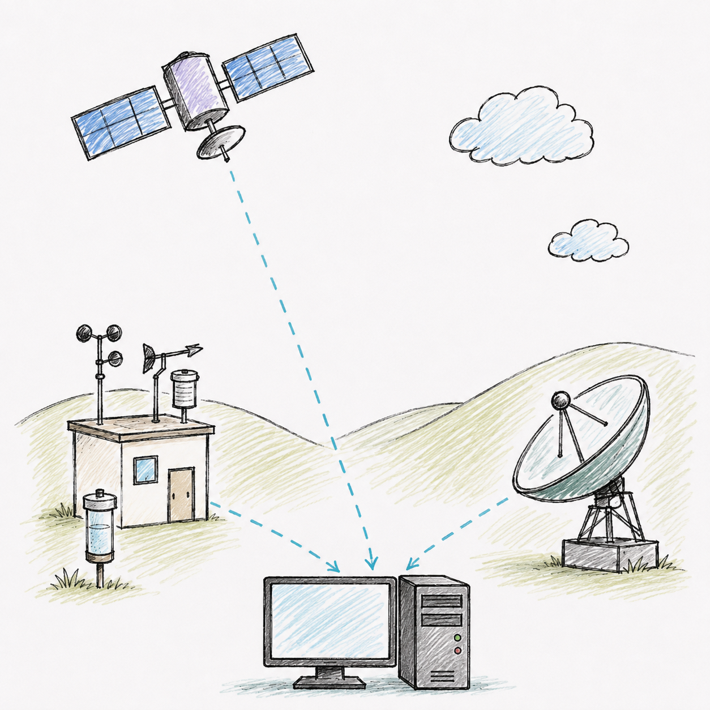

주제 낱말 탐색
1 / 10
이 글에 나올 것 같은 낱말일까요?
그림을 보고 빠르게 골라요.
기상 위성
낱말을 살펴보고 주제와 관련 있는지 판단해 보세요.
낱말 예측 활동을 시작했어요.
1 · 예측하기

그림을 보고 빠르게 골라요.
2 · 1차 읽기
내일 비가 올지, 바람이 얼마나 불지는 어떻게 알 수 있을까요? 일기예보는 여러 곳에서 날씨를 관측하는 일부터 시작합니다.
기상 위성은 우주에서 구름의 위치와 움직임을 살펴봅니다. 지상 관측소는 기온, 습도, 기압과 바람을 측정합니다. 기상 레이더는 비구름이 있는 곳과 비가 내리는 정도를 관측합니다. 바다의 관측 장비와 하늘로 띄운 기상 관측 기구도 필요한 자료를 모읍니다.
이렇게 모은 자료는 대형 컴퓨터로 전달됩니다. 컴퓨터는 지구의 대기를 작은 구역으로 나누고, 각 구역의 공기가 앞으로 어떻게 움직일지 계산합니다. 그 결과를 이용하여 미래의 기온, 바람과 비의 모습을 나타낸 예상 자료를 만듭니다.
그러나 컴퓨터의 계산만으로 예보가 완성되지는 않습니다. 예보관은 관측 자료와 여러 예상 결과를 비교합니다. 산과 바다처럼 지역의 날씨에 영향을 주는 조건도 살펴봅니다. 그런 다음 비가 올 가능성이나 기온의 변화를 판단하여 일기예보를 작성합니다.
완성된 예보는 방송과 인터넷, 휴대 전화 앱을 통해 사람들에게 전달됩니다. 우리는 일기예보를 보고 옷차림을 정하거나 야외 활동을 계획하고, 위험한 날씨에 미리 대비할 수 있습니다.
3 · 정보 도둑 잡기
표현이 달라도 뜻이 같을 수 있어요. 달라진 정보가 있는 문장은 하나예요.
4 · 예보 라인 복구
5 · 검산하기
6 · 새 글 전이
7 · 확인 기록
나의 확인 기록
한 가지를 고르고, 필요하면 한 줄을 덧붙여요.